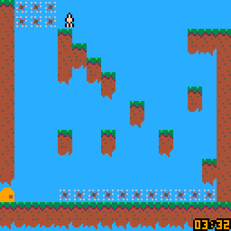

Lost Remote
GGJ 2021


GGJ 2021 submission - the theme was 'Lost and Found'.
Help the main character find a remote, and navigate the weird world he finds himself in.
The Good:
- This was my first time attempting to animate a run cycle. I think it came out well.
- This was my first time making a 2d platformer.
- This was my first time participating in a game jam that had a hard time constraint. Previous game jam that I took part in was over the course of a few weeks to a month.
The Bad:
- The music is awful, and was only given a few minutes of time. If you unlock the music, I'm sorry.
- The collision system sort of fell apart in the end, and what is in place now is a cobbled mess of half-working stuff.
| Status | Released |
|---|---|
| Platforms | HTML5 |
| Rating | Rated 4.0 out of 5 stars(1 total ratings) |
| Author | mikepurdy |
| Genre | Platformer |
| Made with | PICO-8 |
| Tags | PICO-8, Singleplayer |
| Content | No generative AI was used |